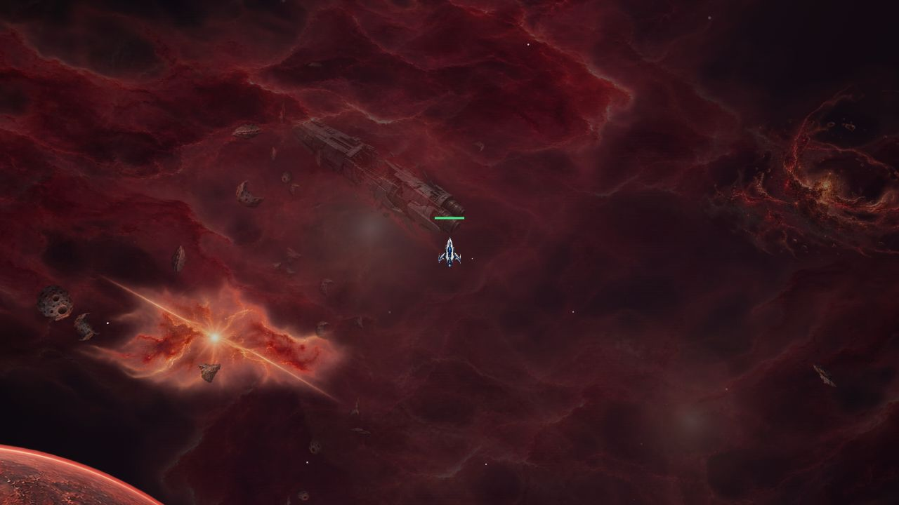
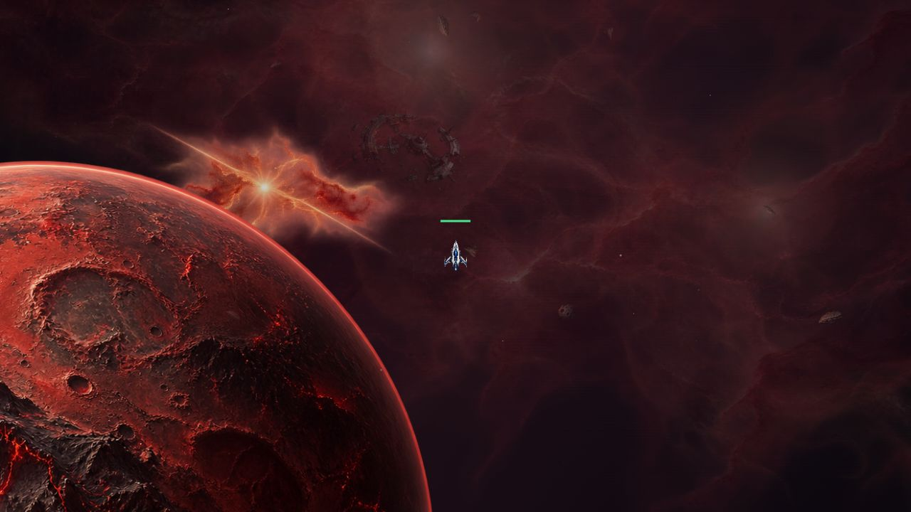
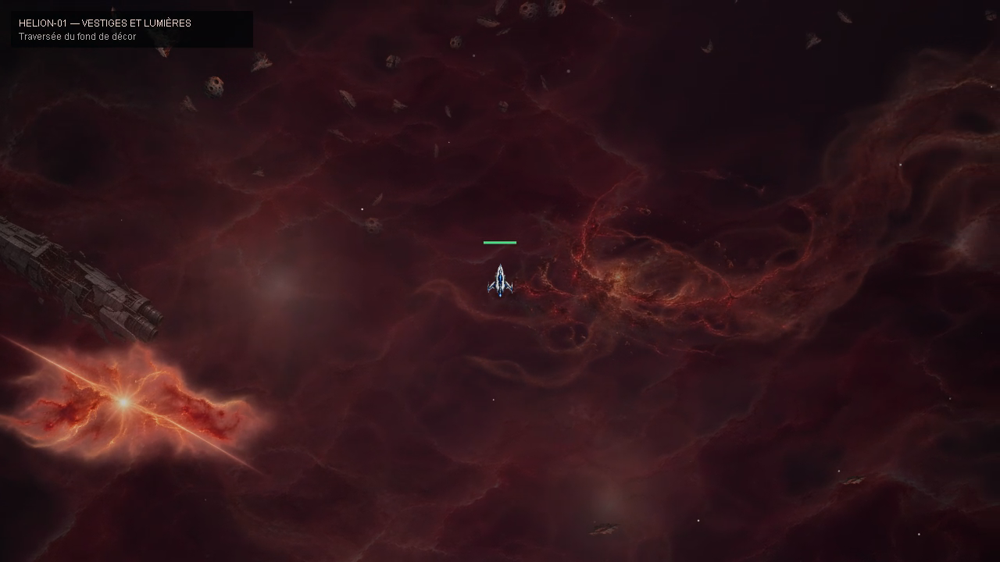

Hélion 1 — planète lointaine et vestiges
La planète défile plus lentement. Une frégate brisée, les restes d'une explosion et une couronne stellaire enrichissent le fond du secteur. La répartition des nuages et des rochers est conservée.
Voir le déplacement
Les 12 premières secondes montrent le déplacement près de la planète. La seconde partie traverse les plans des vestiges et des lumières lointaines.
Ouvrir la vidéo directement
Captures

Les vestiges défilent lentement derrière les rochers et les voiles proches.

La planète garde sa place dans le décor et quitte le champ plus progressivement.

Une trace d'explosion lointaine apporte un autre repère dans le secteur.
Aperçu isolé du moteur de décor avec un vaisseau représentatif. Ce film n'est pas une partie multijoueur enregistrée.